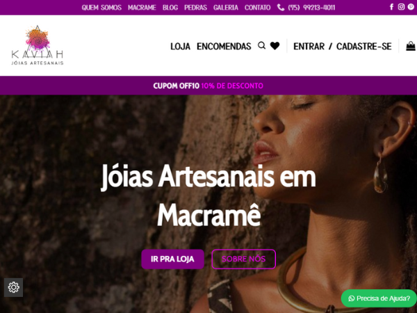

Kaviah - Jóias Artesanais
Loja virtual + Blog e outras páginas (Wordpress + Woocommerce)
Visitar site

Nasci na cidade de São Paulo em 7 de agosto de 1981.
Ao terminar o Ensino Médio me deparei com um dilema: enfrentar alguns anos em uma faculdade ou sair pra viajar e conhecer o mundo?
Não foi difícil escolher a segunda opção. Minha jornada se tornou um estilo de vida onde conhecer era a meta e como meio encontrei o artesanato. Durante esses muitos anos de vida, pude percorrer todos os estados do Brasil e mais de 20 países.
A paixão pela tecnologia e pelo mundo da computação recebi de herança do meu pai. Devido ao seu trabalho, desde muito cedo tive acesso a um computador. Em 2009 decidi montar minha própria loja virtual e foi onde comecei adentrar o mundo do desenvolvimento web. Com a ajuda da "comunidade internética", através de searchs no Google, vídeos no YouTube e até nas documentações, fui adentrando o mundo Wordpress, primeiramente, e como consequência, entendi a necessidade de ir mais além.
Estou estudando atualmente HTML | CSS | JavaScript e tenho como meta, finalmente (antes tarde do que nunca), entrar na faculdade de Ciência da Computação. Além de ser uma grande paixão, acredito que a tecnologia pode nos ajudar como sociedade a evoluir e construir um mundo melhor. Desde que o objetivo seja o bem comum, e não individual. É nesse sentido que pretendo dar minha contribuição.